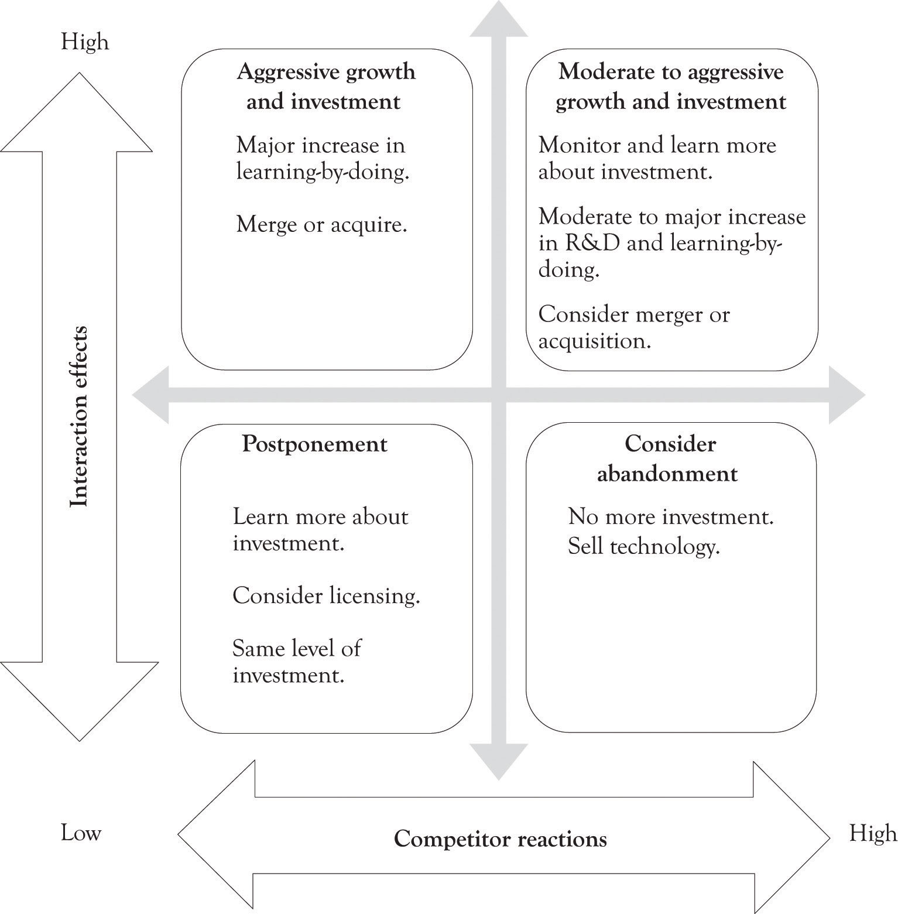

Figure 14.5 "Strategic Action Framework (Modified from Kim and Sanders)" illustrates how these two dimensions can be combined to provide guidance into the investment decision process. The implication is that when there are positive interactions with existing capabilities, then growth options should be pursued. If competitor reactions are low, then an aggressive growth option should be pursued. When competitor reactions are high, then a switching-up option should be pursued. The point is if there are strong competitor reactions, a company may want to change its future investment for growth, even if the interaction effects are high.
Risk enters into the framework when the synergies between existing competencies are low and competitors are not responding. The implication is that the technology may not be important and there is little reason to pursue it if the market is not responding accordingly. The other tricky quadrant occurs in the instance where there is a competency and interaction effects and competitors are not signaling that it is important. In that instance, the product or technology may need to be monitored closely.
Figure 14.5 Strategic Action Framework (Modified from Kim and Sanders)
